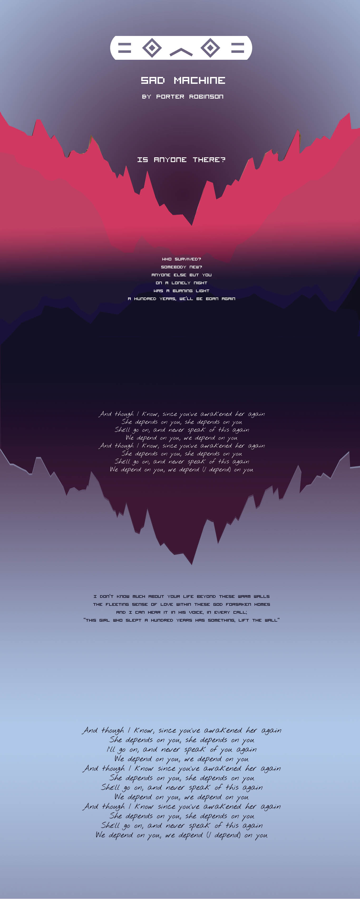

Nick Roger Lyric Site
Improvement Plan
I created my own version of the background artwork I used in the original design so the resolution would be higher and the image would appear cleaner
I lengthened the webpage and spaced out the lyric sections for better pacing for the reader
The original handwritten font did not relate well with the surrounding imagery so I changed the typeface
Edits were made with the help of Jane Kye and Marina Hartzell Gallegos
